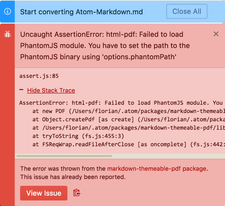
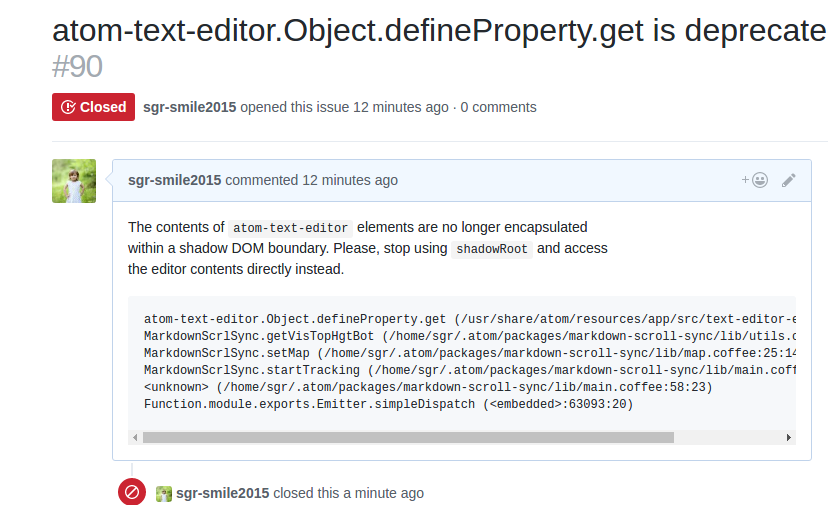

首页
- 使用过remarkable软件,但是这款软件对github的markdown支持还是有所欠缺
- 其中各种补齐,插入图片等都很繁琐
- atom这款软件也是纯开源,本文使用的版本1.18.0(因为vim-mode-plus版本必须大于1.12.0)
配置环境
- atom官网下载安装包,本文使用的操作系统为ubuntu14.04 desktop
- 安装转换pdf文件的js插件phantomjs
- atom下载插件的apm也是需要node.js的支持,下载node.js
atom官网 有可能需要翻墙
phantomjs官网 也需要翻墙
安装各种插件
增强预览(markdown-preview-plus)需要禁用掉atom自带的markdown-preview
同步滚动(markdown-scroll-sync)
代码高亮(language-markdown)
图片粘贴(markdown-image-paste) 效果暂时没有
表格编辑(markdown-table-editor)
pdf导出(markdown-themeable-pdf、pdf-view)
支持vim的编辑方式(vim-mode-plus)
安装插件可使用1apm install vim-mode-plus
以上安装可参考:
博客园文章
在安装完成后,导出pdf时出错

出现上图其实是markdown-themable-pdf没有安装phantomhjs环境,不能转换pdf
修复不能转换pdf插件
- 官网下载安装包phantomjs-2.1.1-linux-x86_64.tar.bz2
- 由于翻墙下载该安装包会很慢,所以提前下载,然后放到/tmp/phantomjs/下
- 在~/.atom/packages/markdown-themeable-pdf
- 执行 npm install phantomjs-prebuild (必须在该文件下执行,不然找不到package.json这个文件)
在使用markdown-scroll-sync时出现如下警告

参考github源码上的评论,这貌似是个bug,而且已经修复了,但还是很多人提交issus,包括我
,有时候多看看人家提的issus答案就能得到解决的方法,毕竟人家的时间是很值钱的
具体解决方法
github解决
其实很简单:
~/.atom/packages/markdown-scroll-sync/lib这个目录下
修改utils.coffee文件,记得先备份
在文件的第12行,删除.shadowRoot字段
重启atom即可